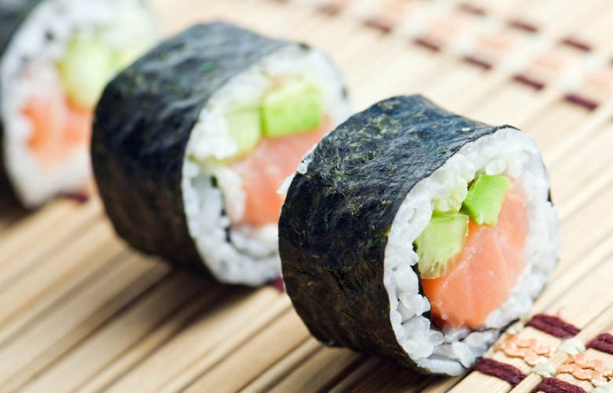

Sushi

Sushi Maki-Zushi
This is a delicious recipe for a sushi. You'll love it!!
Ingredient:
- Uncooked rice
- Water
- Rice vinegar
- Cucumber
- Avocado
- Philadelphia cream cheese
- Surimi or smoked salmon
- Soy sauce
- Wasabi
- Testing
HCooking and mixing the rice with vinegar:
- Wash the rice thoroughly but don't wash it so forcefully that the rice grains crack. Do not wash the rice in hot water and never use soap. Next, rinse the rice with water. Repeat the process about 3 times.
- Soak the rice in water for 30 minutes to one hour before cooking.
- Cook the rice.
- When the rice is done, let it stand for about 15 minutes.
- Place the rice in the handai andslowly pour the vinegar over the rice. Use the shamoji in a slicing motion to thoroughly blend the rice and vinegar. Be careful not to press the rice with the shamoji.
How to make maki-zushi:
- On top of the Makisu, place a sheet of Nori.
- Put some rice on top of Nori and spread it out.
- Leave about an inch of space on the bottom and the top of Nori without any rice.
- Place a long, thin stripsof avocado, cucumber, surimi or salmon and cream cheese on top of the rice.
- Make sure both left and right sides are even.
- Roll it up forward.
- Place both index fingers on the sides of Makisu and shape the maki-zushi into a square.
- Cut the maki-zushi with a very sharp knife into 6 pieces.
- You may want to add soy sause and wasabi.
You don't have to like everyone, you're not sushi!! =)